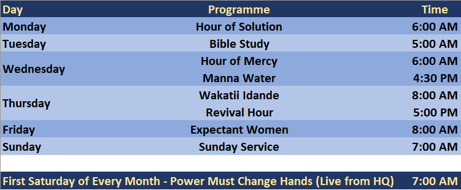

MFM LR 225
Home
About Us
Our Leaders
Other Links
Our Programmes
Listen to Messages
Ask for Prayers
Testimonies
About Us
Order of Services

Praise Sunday
About Us
Mountain of Fire and Miracles Mnistries Lagos Region 225 is a Region under the MFM Ministries Worldwide whose General Overseer is Dr. D.K. Olukoya
Read More →